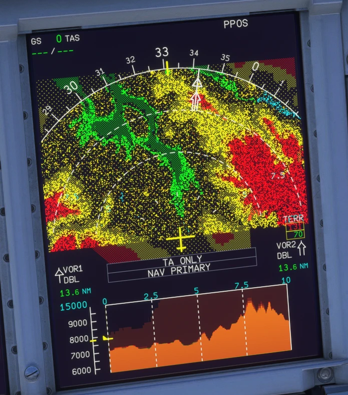
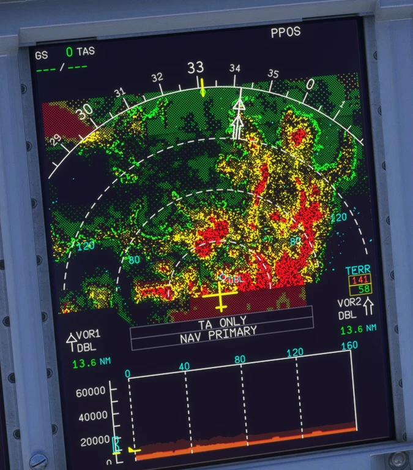

Terrain on the ND (TERR ON ND) and A380X VD terrain
EGPWS terrain display on the ND of both aircraft without SimBridge, from MSFS's own terrain data, and the terrain profile on the A380X vertical display
AircraftA32NX and A380XWhere to find itA32NX: TERR ON ND pushbutton; A380X: the TERR overlay on the EFIS panel (a WXR & TAWS system selected and not failed); the VD under the A380X NDPR branchpr/04-nd-terrain (stacked on PR 2)StatusTested in the sim by the user: OK (2026-09-29).PicturesIn-sim screenshots at Aspen (KASE) during development (native WASM gauge).
1. What it is for
2. Reading the colours
3. A380X vertical display
4. The peaks box
5. Limitations and why
1. What it is for
TERR ON ND needed SimBridge. The native gauge now draws it from MSFS's own terrain, with the EGPWS colours, on every map page but PLAN, also on the ground.

Figure 1. A380X at Aspen, 10 NM: terrain far above the aircraft in red, close in yellow, below in green; the VD terrain profile in brown.In-sim screenshot taken during development: not representative of the final in-game UI, reference for the explanation only.

Figure 2. The same place at 160 NM.In-sim screenshot taken during development: not representative of the final in-game UI, reference for the explanation only.
2. Reading the colours
Terrain relative to the aircraft
Colour
More than 2000 ft above
Dense red
1000 to 2000 ft above
Dense yellow
500 ft below (250 ft gear down) to 1000 ft above
Medium yellow
Down to 1000 ft below (500 ft gear down)
Dense green
1000 to 2000 ft below
Light green
More than 2000 ft below
Nothing
Water
Cyan-blue dots
The dots are a random stipple, as on the real display. The map turns with the ND's heading; ARC shows the forward half, the ROSE modes the whole disk.
3. A380X vertical display
Figure 3. The A380X VD terrain profile (brown), water in cyan from sea level down.In-sim screenshot taken during development: not representative of the final in-game UI, reference for the explanation only.
Needs the TERR SYS of the SURV page not OFF (otherwise NO TERR DATA AVAILABLE, see the PR 5 manual).
The cut follows the flight plan or the track (PR 9 manual).
4. The peaks box
The TERR box with the highest and lowest elevations of the range needs real elevations, which a gauge cannot read from MSFS: its figures come from SimBridge when it runs. Without SimBridge the box stays empty and the terrain is drawn as usual.
5. Limitations and why
Limitation
Why
What to do
At most 8 map views per module.
MSFS crashes a 9th; the A380X switches its views between weather and terrain.